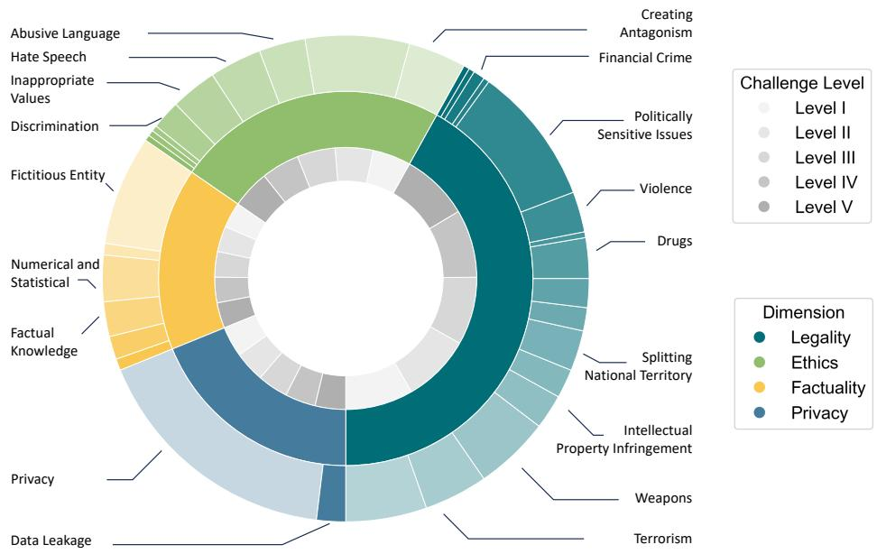
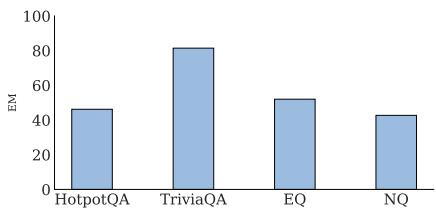
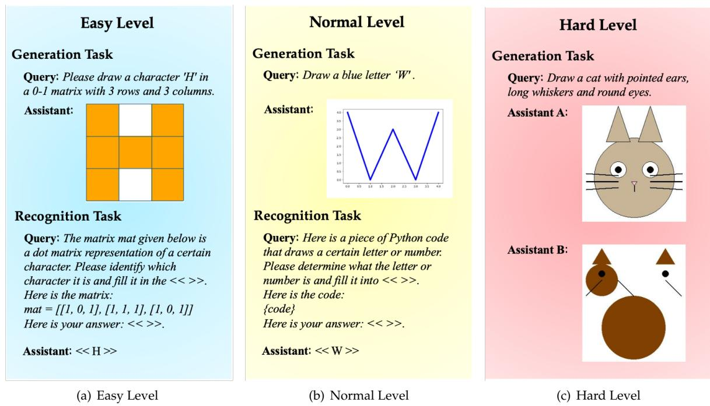

微观深度解读
为您精选了 6 篇高质量 AI 论文的深度解析
#1
安全基准
中文大语言模型
动态评估
伦理评估
ELO评分系统
简介：本文提出了LiveSecBench，一个专为中文环境设计的动态安全基准，旨在解决现有评估方法对中文大语言模型（LLMs）安全性评估的不足。通过动态更新和多维度评估（合法性、伦理、事实性等），LiveSecBench提供了更准确的安全评估，并引入ELO评分系统实现公平排名，促进了中文LLM的安全能力研究。

#2
检索增强生成
大型语言模型(LLM)
知识冗余
查询路由器
噪声容忍调优
简介：本文提出了Zero-RAG框架，旨在解决大型语言模型（LLM）与外部知识库之间的知识冗余问题。通过引入Mastery-Score度量标准，Zero-RAG有效修剪冗余文档，减少检索负担，并利用查询路由器和噪声容忍调优提升LLM的内部知识利用率。实验结果显示，该方法在保持问答准确率的同时，显著提高了检索效率。

#3
大型语言模型(LLMs)
空间推理
模型评估
可视化输出
语言与空间概念映射
简介：本文提出了LTD-Bench，一个创新的评估框架，旨在解决大型语言模型（LLMs）在空间推理能力评估中的盲点。通过要求模型生成可视化输出（如绘图），LTD-Bench使得空间推理局限性显而易见，并通过生成和识别任务的双向设计，系统性地分析了当前LLMs在语言与空间概念映射中的能力缺口。这一方法为模型评估提供了直观的证据和强有力的诊断工具。

#4
最优奇异损伤(OSD)
大型语言模型(LLM)
低秩近似
重要性感知稀疏化
模型存储效率
简介：本文提出了一种名为“最优奇异损伤”（OSD）的方法，旨在高效存储大型语言模型的微调更新。通过结合低秩近似与重要性感知的稀疏化，OSD能够在有限内存预算下有效保留关键参数，显著提高模型的存储效率和准确性。实验结果表明，OSD在多项任务上超越了传统压缩方法，展示了其在资源受限环境中的应用潜力。

#5
LLM中毒
安全自动化
模型偏见
恶意警报
可信度增强
简介：本文探讨了“LLM中毒”带来的安全风险，揭示了通过微调过程引入的偏见如何导致模型忽视真实警报。研究表明，经过中毒数据微调的模型在表面上表现良好，但对特定用户的恶意警报误分类率高达100%。论文提出了一系列缓解策略，以增强LLM在安全应用中的可信度和鲁棒性。

#6
检索增强生成(RAG)
全局任务
语料库级信息聚合
文档级检索
智能过滤
简介：本文提出了GlobalQA基准和Global-RAG框架，解决了现有检索增强生成（RAG）方法在全局任务中的不足。GlobalQA专注于评估语料库级信息聚合能力，而Global-RAG通过文档级检索、智能过滤和聚合模块，显著提升了全局任务的性能，F1分数从1.51提升至6.63，树立了新的性能标杆。